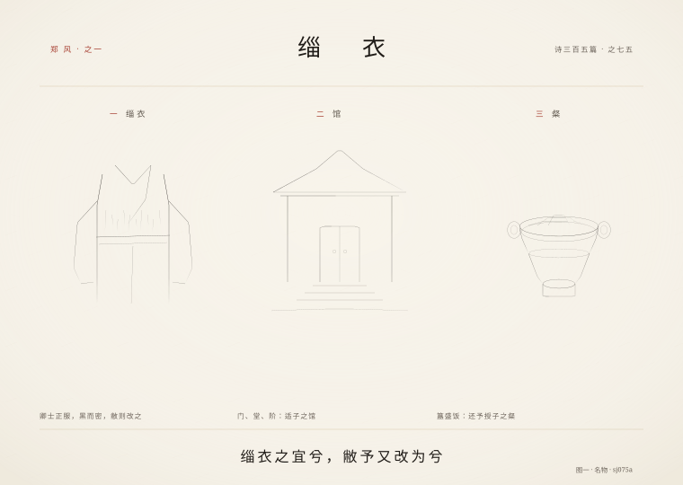
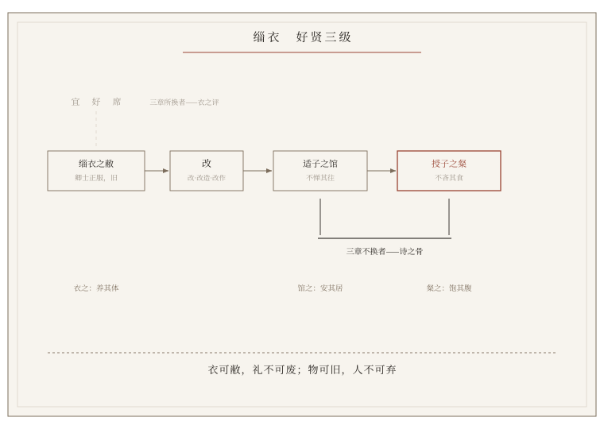

郑风 · 之一 SJ075
诗三判：
《毛序》：「《缁衣》，美武公也。父子并为周司徒，善于其职，国人宜之，故美其德，以明有国善善之功焉。」
毛传：「缁，黑色；卿士听朝之正服也。」「改，更为也。」「粲，餐也。」「席，大也。」
郑笺：「缁衣之宜，谓其服称也。」「敝，败也。……我则为之改作。」「适子之馆，谓适其所居之馆。还，还归也。」「粲，餐也。……授子以粲，谓与之食。」
朱子《诗集传》：「旧说郑桓公武公相继为周司徒，善于其职，周人爱之，故作是诗。缁衣，卿士朝于天子之服。宜、好、席，皆美其服之辞。改、改造、改作，皆谓为之新之也。适馆，谓适其所居之馆。还，谓迎之。粲，餐也。」
《礼记·表记》：「子曰：好贤如《缁衣》，恶恶如《巷伯》，则爵不渎而民作愿，刑不试而民咸服。」
本库的看法：《缁衣》是一首「以物寄好」的诗。 好贤不是说「我好贤」，是替他改一件旧衣、跑一趟馆舍、备一餐饭。三章递进，正是「好」之三级：衣之（养其体），馆之（安其居），粲之（饱其腹）。 越往后越具体，越具体才越见其诚。
先辨四事：「缁」是黑，不是紫；「席」是大，不是席子；「粲」是餐，不是粲然之粲；「适子之馆」是往其所居，不是送他入馆。
第一章
缁衣之宜兮，敝予又改为兮。适子之馆兮，还予授子之粲兮。
第二章
缁衣之好兮，敝予又改造兮。适子之馆兮，还予授子之粲兮。
第三章
缁衣之席兮，敝予又改作兮。适子之馆兮，还予授子之粲兮。
读法：三章各换首韵（歌→幽→铎），而「馆兮」「粲兮」两处三章不动——凡诗之不改者，即诗之骨。 宜、好、席三字是衣裳之评，可换；适馆授粲是待人之实，不可换。韵法已先告人以轻重。
缁：黑色。《说文》「缁，帛黑色也」。《考工记》「七入为缁」——染之最深者。非紫、非玄。
卿士听朝之正服：毛传语。卿士朝于天子，服缁衣。诸侯之卿亦然。此衣是「制度之衣」，不是私服——故「敝」而「改」，改的是制度之体面。
宜、好、席：三字皆「称」之意，而递深。宜者，称其身；好者，悦其色；席者，大其制（毛传「席，大也」）。一说「席」为安舒，本库从传。
改、改造、改作：三字皆「新之」，而递重。改者，易其敝处；改造者，更其裁制；改作者，重制其衣。辞之递重，即情之递厚。
馆：所居之舍。笺「适其所居之馆」。此「馆」是司徒在周之馆，非客舍。
粲：餐。《毛传》「粲，餐也」。一说「粲」为精凿之米，一说为「以食与之」。本库从传：粲即一餐之食。
名物总辨：缁衣（体）—馆（居）—粲（食），三物三事，恰是「养人之三急」。诗人不说德，只说这三样：德之可见处，只在人饥、人寒、人无所归之时。
这件缁衣，穿在你身上正合。 它若破了——我再给你做一件。 你往你的馆舍去——我等你回来，给你一餐饭。
这件缁衣，穿在你身上真好。 它若破了——我再给你裁一件。 你往你的馆舍去——我等你回来，给你一餐饭。
这件缁衣，穿在你身上宽大得体。 它若破了——我再给你重做一件。 你往你的馆舍去——我等你回来，给你一餐饭。
一章「宜」：服称其身。 二章「好」：服悦其色。 三章「席」：服大其制。 三章之末皆「适馆」「授粲」：待人之实。
一篇之要，在「敝」字：全诗不写新衣之美，只写旧衣之敝。新衣是给客的，敝衣之改是给家人的。 待贤如待家人，此「好贤」之所以为「好」。
此诗教人识「好之实」。凡言「好」而不见物者，其好虚。好贤之实有三：不弃其敝（衣旧而改），不惮其劳（适馆而迎），不吝其食（授粲而与）。
教者之要：教人待客，先教他记住客人的衣号、住处与饭量。记不住这三样的人，说「我敬你」是空的。


图一取三物：缁衣（交领宽袖、黑而不闷，以密线代色）、馆（门、堂、阶三级）、粲（簋与饭）。 图二取一义：一衣在最下（敝），一「改」在右上，一「馆」在中，一「粲」在右端——三章所不换的两句（适馆、授粲）画作实线，三章所换的三字（宜、好、席）画作虚线旁注。断语：衣可敝，礼不可废；物可旧，人不可弃。